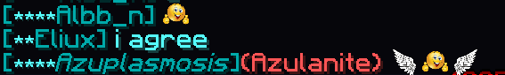

Download: Eiramoticons_1.12.2-6.4.0.jar
The Emojimon brings emojis into minecraft chat. There are a bunch of emojis to choose between and they can be sent like discord emojis surrounded by colons e.g. :smiley:.
You don't need to write out the full emoji names, you can start typing for example :smi and press tab and it will autocomplete the :smiley: emoji
An example of how emojis look in the chat.
This version of the mod is made especially for Wynncraft and it works even if you're using Wynntils